Case study
S3 cost reduction for an Iceberg lakehouse
Two warehouse migrations landed on one S3 bucket, and nobody owned the bucket itself. Eighteen months later: 1.5 PB, 210 million objects averaging 7.6 MB, and an S3 bill that went 14x in six months. The diagnosis was a 3.3x storage multiplication from zero Iceberg maintenance; the fix was a five-workstream program with falsifiable targets. Nightly maintenance and orphan cleanup shipped in late November; December's bill answered with a 70% drop.
1.5 PB
bucket footprint at kickoff, 210M objects
3.3×
Iceberg footprint vs actual data in the core prefix
−70%
monthly S3 cost, first full month after rollout
<$5K
January run-rate, down from a $34.5K peak
Amazon S3Apache IcebergStarburst / TrinoAirflowFinOps
Companion repos
The maintenance machinery behind the program is public: the scheduled Iceberg optimization and orphan-object detection repo, and the post-hook maintenance macro that keeps every build compacted, expired, and orphan-free.
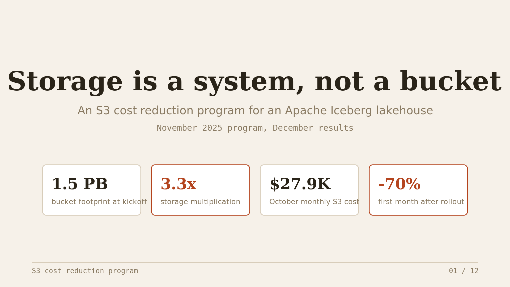
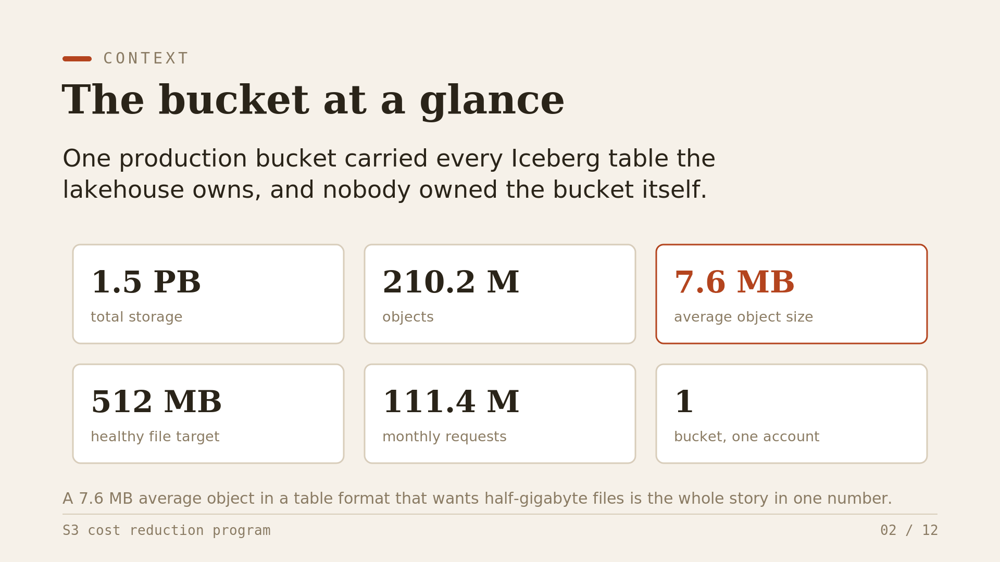
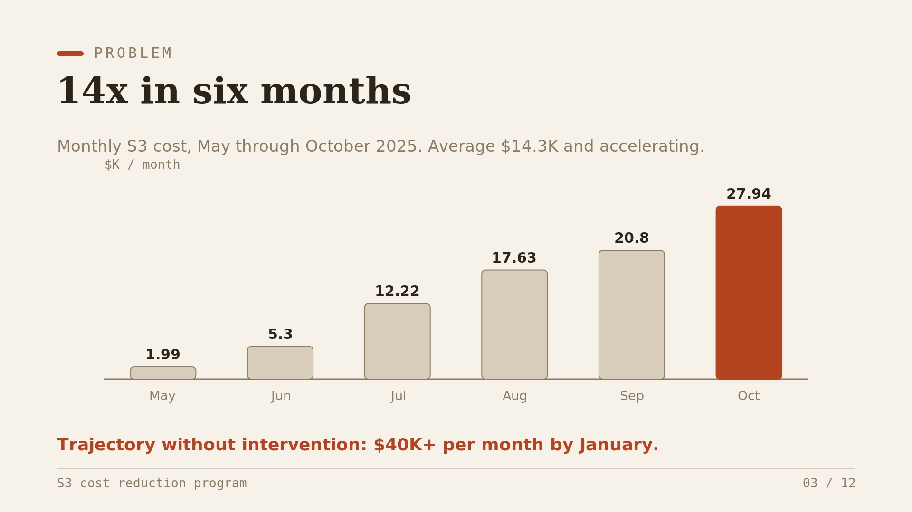
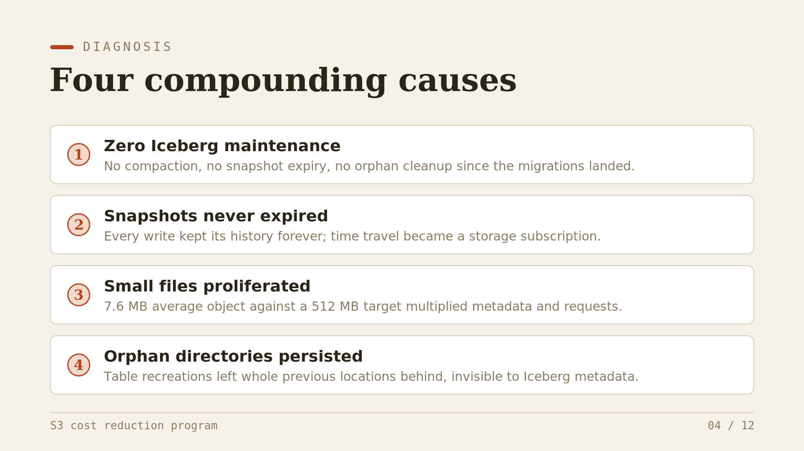
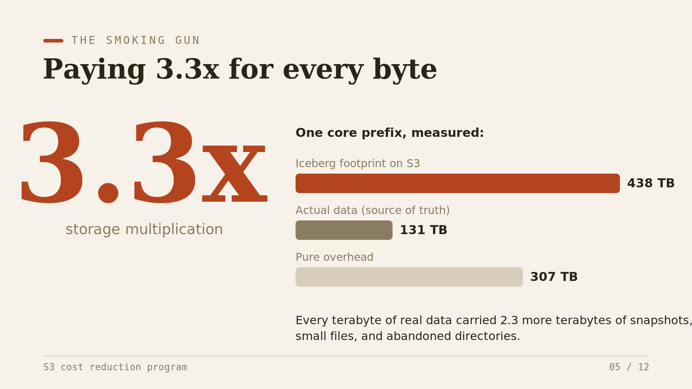
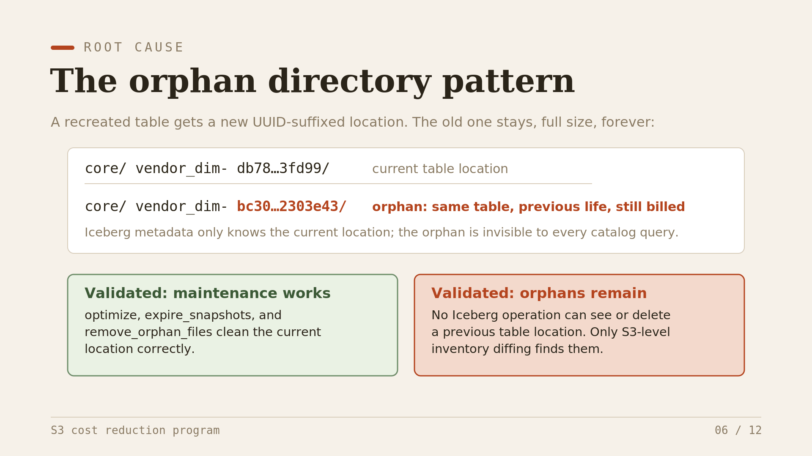
Repo companion
Orphan directories are invisible to catalog queries, so detection runs against the dbt manifest and S3 inventory instead: the orphan-object detection pattern is public in the lifecycle repo.
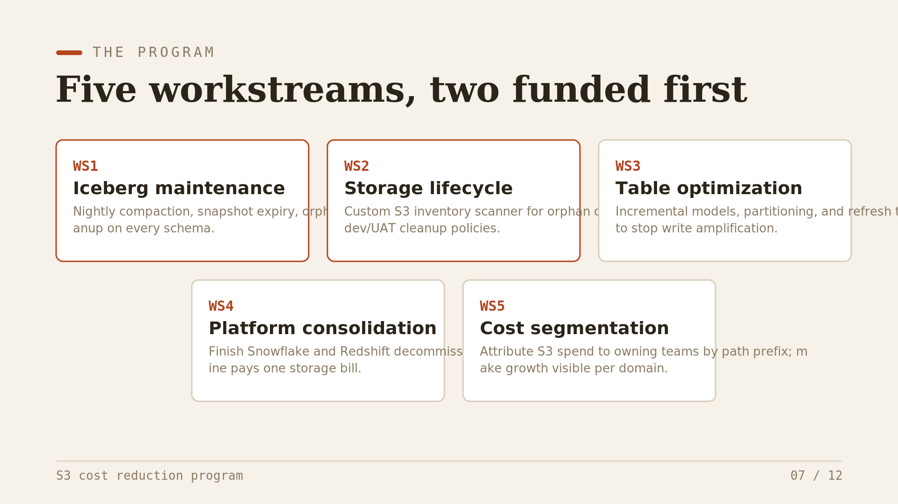
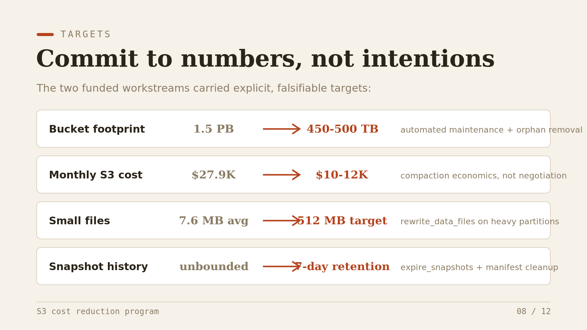
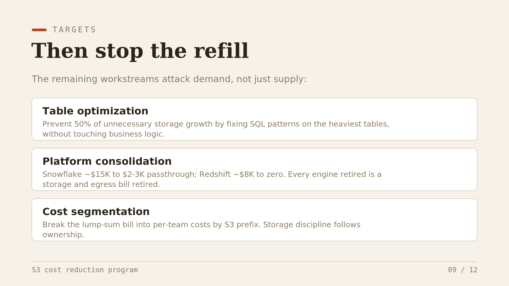
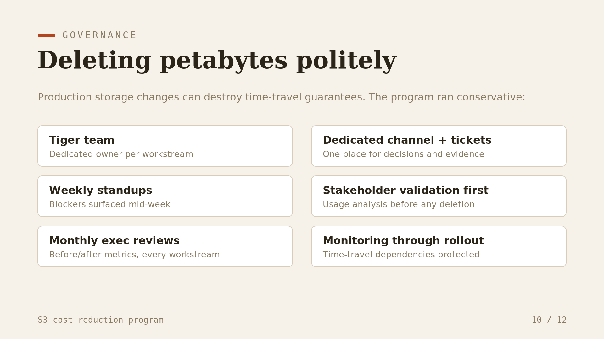
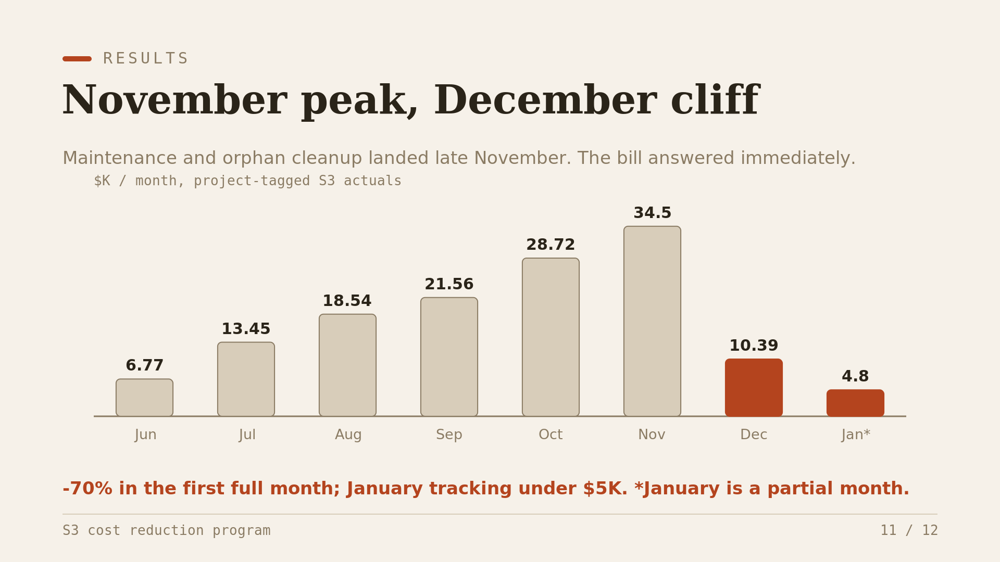
Related case study
Workstream four is its own story: the Snowflake estate consolidation that removes a ~$443/day compute bill alongside the storage cleanup.
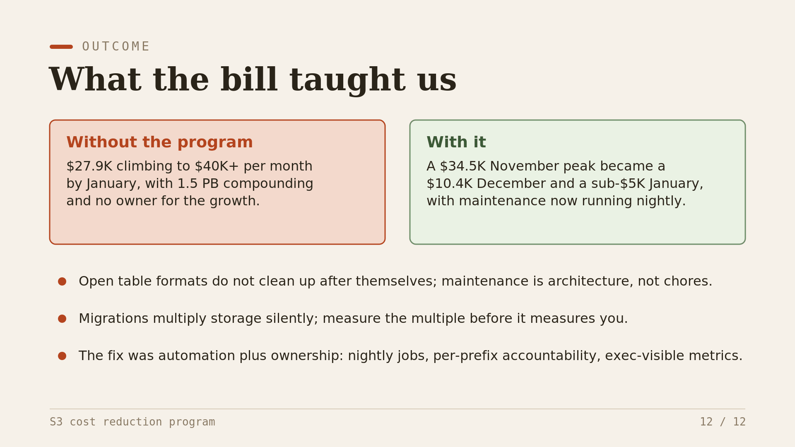
← All projects